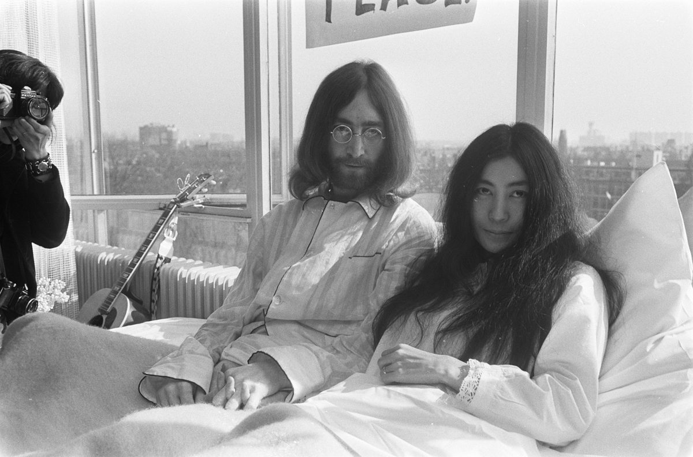

The Plastic Ono Supergroup plays Peace for Christmas at the Lyceum
John Lennon and Yoko Ono led an expanded Plastic Ono Band at a UNICEF benefit called Peace for Christmas at the Lyceum Ballroom in London on December 15, 1969, per the official John Lennon site.
George Harrison, Eric Clapton, Billy Preston, Delaney & Bonnie and Keith Moon joined in, it was Lennon's last concert in Britain per uDiscover Music, and the clip below is Cold Turkey recorded that night.
1969 in 1960s music: the full year guide
The Plastic Ono Supergroup plays Peace for Christmas at the Lyceum
John Lennon and Yoko Ono led an expanded Plastic Ono Band at a UNICEF benefit called Peace for Christmas at the Lyceum Ballroom in London on December 15, 1969, per the official John Lennon site.
George Harrison, Eric Clapton, Billy Preston, Delaney & Bonnie and Keith Moon joined in, it was Lennon's last concert in Britain per uDiscover Music, and the clip below is Cold Turkey recorded that night.
John and Yoko put up the WAR IS OVER! billboards
Billboards reading WAR IS OVER! IF YOU WANT IT, Happy Christmas from John & Yoko, went up in cities around the world on December 15, 1969, per Wikipedia.
Sources count 11 or 12 cities, the campaign carried on the peace message of the couple's 1969 bed-ins, and the slogan later became the title of their 1971 single Happy Xmas (War Is Over).

The Byrds release Jesus Is Just Alright as a single
Columbia issued the Byrds' Jesus Is Just Alright as a single on December 15, 1969, backed with It's All Over Now, Baby Blue, a Bob Dylan song, per Wikipedia.
Terry Melcher produced it, it stalled at No. 97 on the Hot 100, the Doobie Brothers covered the song in 1972, and the clip below is the Byrds' recording.
1967 in 1960s music: the full year guide
The Who release The Who Sell Out in the UK
Track Records released The Who Sell Out, the third album by The Who, in Britain on December 15, 1967, per the band's official site.
It plays like a pirate radio broadcast, with jingles and mock adverts between the songs, and the clip below is I Can See for Miles from the album.
The Beatles send fans Christmas Time (Is Here Again)
The Beatles' fifth fan club Christmas record, Christmas Time (Is Here Again), was released on December 15, 1967 on Lyntone as LYN 1360, per Wikipedia.
They had recorded it at Abbey Road on November 28, it reached fans a week after the Magical Mystery Tour EP came out on December 8, and the clip below is that EP's title song.
Hello, Goodbye is certified gold in the US
The RIAA certified the Beatles' Hello, Goodbye on Capitol gold on December 15, 1967, per the RIAA Gold & Platinum database.
Capitol had released it in America on November 27, it went on to top the Billboard Hot 100, and the clip below is the official video.
1966 in 1960s music: the full year guide
The Beatles add trumpets and cellos to Strawberry Fields Forever
At EMI Studios in London on December 15, 1966, four trumpeters and three cellists recorded George Martin's new score for the Beatles' Strawberry Fields Forever, per the Paul McCartney Project.
Lennon added vocals the same day, the remake was later joined to an earlier take, and the clip below is the finished song, released in February 1967 with Penny Lane.
1964 in 1960s music: the full year guide
Capitol releases Beatles '65
Capitol released the Beatles' Beatles '65 in the United States and Canada on December 15, 1964, as T-2228 in mono and ST-2228 in stereo, per Wikipedia and the Paul McCartney Project.
It took eight songs from the UK album Beatles for Sale, added I'll Be Back and both sides of the I Feel Fine single, and the clip below is I Feel Fine.
1963 in 1960s music: the full year guide
The Beatles tape Thank Your Lucky Stars on Merseyside
The Beatles taped an all-Liverpool edition of ABC Television's Thank Your Lucky Stars at Alpha Television Studios in Aston, Birmingham, on December 15, 1963, per the Beatles Bible.
They mimed four songs including I Want to Hold Your Hand, the show aired on December 21, and the clip below is that song. Its story is in our I Want to Hold Your Hand song page.
1962 in 1960s music: the full year guide
Big Girls Don't Cry spends a fifth week at No. 1
The Four Seasons' Big Girls Don't Cry was No. 1 on the Billboard Hot 100 dated December 15, 1962, its fifth and final week on top, per Wikipedia.
It reached No. 1 on November 17, matching the five-week run of Sherry, and the clip below is the official audio.
Vaughn Meader's The First Family reaches No. 1
The First Family, Vaughn Meader's Cadence comedy album of John F. Kennedy impressions, was No. 1 on Billboard's mono album chart dated December 15, 1962, per the Wikipedia list of 1962 number-one albums.
It stayed on top for 12 weeks and won the Grammy for Album of the Year per Wikipedia, and the clip below is a track from the album.
1961 in 1960s music: the full year guide
The Beatles play the Cavern at lunchtime and New Brighton at night
The Beatles played a lunchtime session at the Cavern Club in Liverpool on December 15, 1961, then an evening show at the Tower Ballroom in New Brighton, per the Paul McCartney Project.
The 45worlds listing names Rory Storm and the Hurricanes on the New Brighton bill, and the clip below is My Bonnie, the record they made in Hamburg with Tony Sheridan that year.
Andy Williams marries Claudine Longet
Andy Williams married the French-born singer and dancer Claudine Longet on December 15, 1961, per Wikipedia.
It was the year he moved from Cadence to Columbia Records, and the clip below is Moon River, which he sang at the 1962 Academy Awards.
Frequently Asked Questions
What happened on December 15, 1969 in music?
John Lennon and Yoko Ono led the Plastic Ono Supergroup at the Peace for Christmas UNICEF benefit at the Lyceum Ballroom in London, and their WAR IS OVER! billboards went up in cities around the world.
When was Beatles '65 released?
Capitol released Beatles '65 in the United States and Canada on December 15, 1964.
When was The Who Sell Out released?
Track Records released The Who Sell Out in the UK on December 15, 1967.
What was No. 1 on December 15, 1962?
The Four Seasons' Big Girls Don't Cry was No. 1 on the Billboard Hot 100, and Vaughn Meader's The First Family topped the album chart.
When was Hello, Goodbye certified gold?
The RIAA certified the Beatles single Hello, Goodbye gold on December 15, 1967.